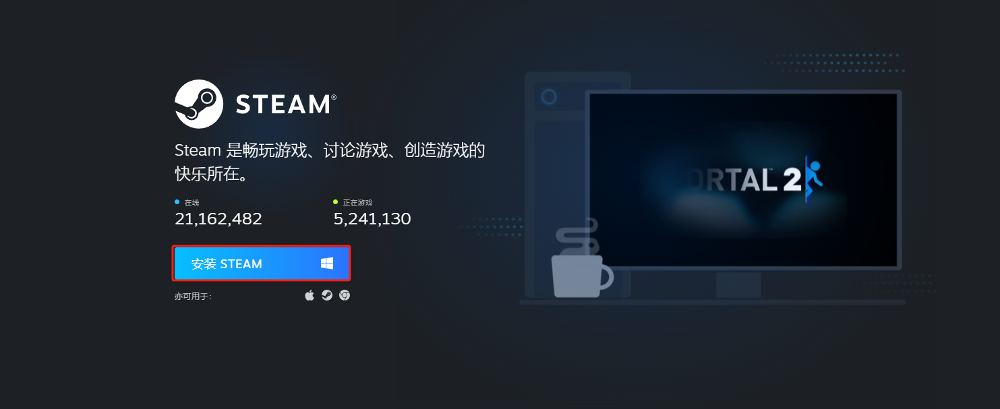
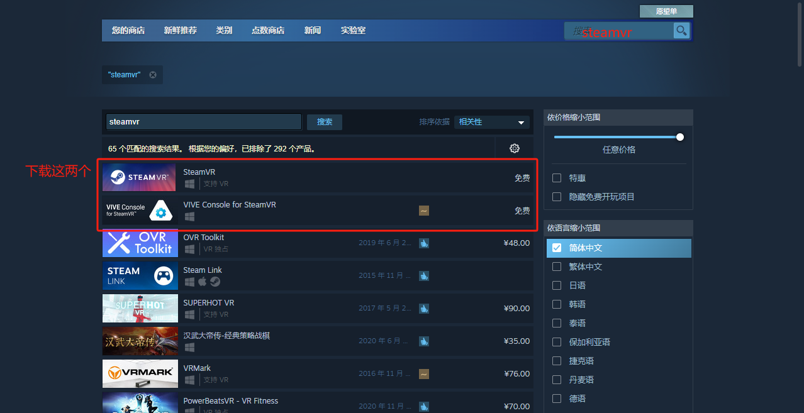
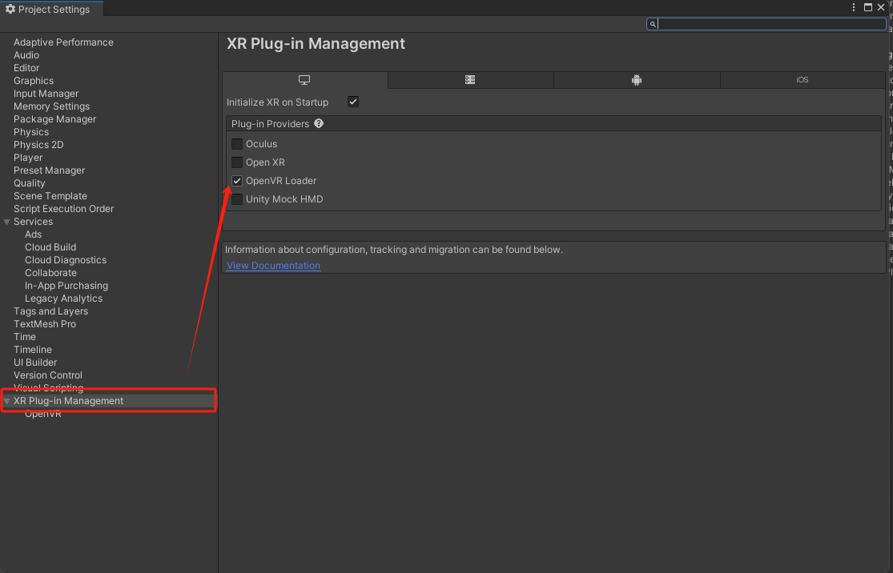
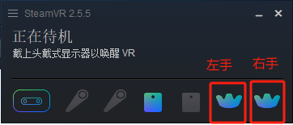

手套结合StreamVR使用文档
-
Steam环境配置
1.1下载Steam和SteamVR
Steam：https://store.steampowered.com/about/
在Steam中下载SteamVR


1.2使用steamVR连接硬件设备
-
定位器*2
-
追踪器*2
-
头显*1
-
Unity VR环境配置
2.1下载Steam相关插件
在window->Package Manager中下载SteamVR Plugin、Vive Input Utility最新插件。
将插件导入，并根据提示进行默认配置。




2.2导入手套交互插件
插件说明:此插件基于动捕插件开发,如何驱动手模型、模型要求都以下方文档为准。
通过Assets->Import Package->Custom Package导入插件
可以在Assets->Motion->Scenes->GloveVR找到Demo场景
-
脚本说明
3.1Assets->Scripts->Glove->ButtonBaseInteraction.cs
按钮交互脚本，需要在按钮上添加碰撞体。用手指点击按钮时会触发按钮的OnClick事件，可手动绑定
自己的实现。
3.2Assets->Scripts->Glove->GrabInteraction.cs
使用此脚本可实现抓取物体(至少一个拇指关节和其他手指一个关节)，物体需要添加碰撞体和刚体。
碰撞体勾选IsTrigger属性，刚体取消勾选UseGravity属性。
3.3Assets->Scripts->Glove->ThrowInteraction.cs
使用此脚本可实现抓取物体(至少一个拇指关节和其他手指一个关节)，并且可以将物体扔出。物体需要添加碰撞和
刚体，且碰撞体不要勾选IsTrigger属性，刚体勾选UseGravity属性。
3.4Assets->Scripts->Glove->Gesture.cs
使用此脚本可实现食指和中指并指检测，会根据食指指尖和中指指尖的距离(可通过阈值配置)判断是否并指，
并指会触发syndactyliaEvent事件。可以订阅脚本中的syndactyliaEvent事件来实现自己的业务需求。
3.5Assets->Scripts->Glove->ServerInteraction.cs
使用此脚本可向MotionStudio发送指令。例如:控制左右手震动马达
-
特殊配置说明
4.1手模型配置
左手配置为leftHand层，右手配置为rightHand层。每个手指都有三个关节组成，指尖、指中、指底。
为每个关节添加碰撞体和刚体(不使用重力)。大拇指各个关节添加thumb标签，其它手指添加otherFinger标签，
手掌添加palm标签。
4.2追踪器佩戴
追踪器灯朝向手背方向

4.3追踪器区分左右手
如果只有一个追踪器只会定位左手
如果有两个追踪器根据streamVR显示tracker图标区分左右手。图标一对应左手图标二对应右手
